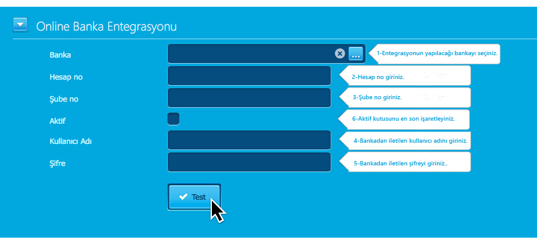

Müşteri banka formunu şubeye iletir. Kullanıcı adı banka tarafından oluşturulmaktadır. Şifre işlemi ise kullanıcı
tarafından internet bankacılığına giriş yaparak oluşturulmaktadır.
Şifre, 16 karakterden olup büyük-küçük harf ve sembol kullanılarak oluşturulması gerekmektedir. Müşteri
şifresini tanımlarken isterse kullanıcı adını da değiştirebilir. Ancak yeni kullanıcı adını şubesi tarafından
onaylatması gerekir. Türkçe karakter kullanılmamaktadır.
Bankanız tarafından tarafınıza iletilen Kullanıcı Adı ve Şifre ile entegrasyon işlemini tanımlamak için öncelikle "Tanımlar > Kasa ve Banka Tanımları" menüsünden tanımlama yapmak istediğiniz kasanın üzerine tıklayınız. Kasanızı daha önceden tanımlamadıysanız sağ üst köşede yer alan "Yeni Kasa" butonuna basarak önce kasanızı oluşturmanız gerekmektedir. İlgili kasanızın üzerine tıkladığınızda sayfanın alt tarafında yer alan "Online Banka Entegrasyonu" alanlarını dolduruyoruz.
Banka entegrasyon dokümanı için tıklayınız. Yukarıda yer alan alanları doldurduktan sonra "Test" butonuna basınız. "Entegrasyon testi başarılı" uyarısını gördükten sonra 6. numaralı alanda yer alan aktif butonunu işaretleyerek kaydet butonuna basabilirsiniz.
Ancak işlemlerinizi tamamladıktan sonra online banka işlemlerinden şifre değişikliği yaptığınızda aynı işlemi sisteme giriş yaparak kullanıcı adı ve yeni şifrenizi girmeniz gerekmektedir.